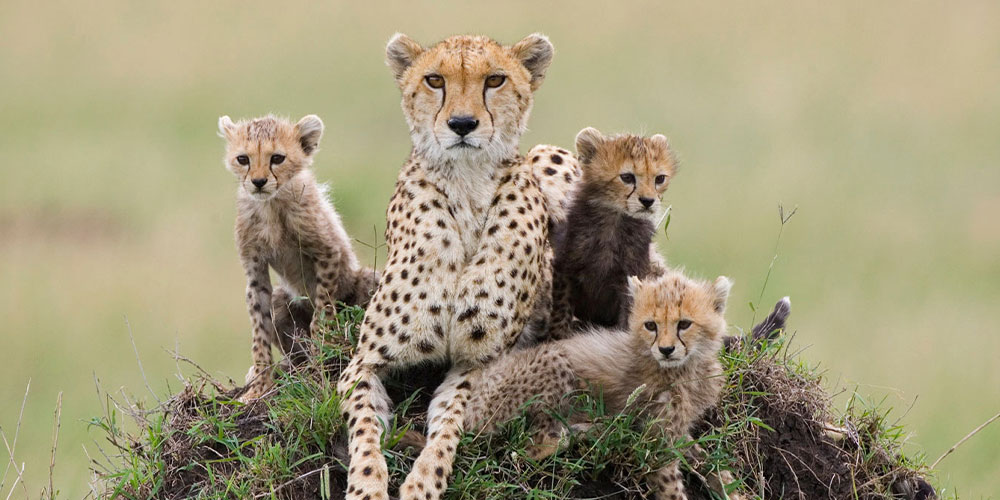

The cheetah is the world's fastest land mammal. With acceleration that would leave most automobiles in the dust, a cheetah can go from 0 to 60 miles an hour in only three seconds. These big cats are quite nimble at high speed and can make quick and sudden turns in pursuit of prey.
Female cheetahs typically have a litter of three cubs and live with them for one and a half to two years. Young cubs spend their first year learning from their mother and practicing hunting techniques with playful games. Male cheetahs live alone or in small groups, often with their littermates.
Most wild cheetahs are found in eastern and southwestern Africa. These populations are under pressure as the wide-open grasslands they favor are disappearing at the hands of human settlers.
Before unleashing their speed, cheetahs use exceptionally keen eyesight to scan their grassland environment for signs of prey—especially antelope and hares. This big cat is a daylight hunter that benefits from stealthy movement and a distinctive spotted coat that allows it to blend easily into high, dry grasses.
When the moment is right a cheetah will sprint after its quarry and attempt to knock it down. Such chases cost the hunter a tremendous amount of energy and are usually over in less than a minute. If successful, the cheetah will often drag its kill to a shady hiding place to protect it from opportunistic animals that sometimes steal a kill before the cheetah can eat. Cheetahs need only drink once every three to four days.
The cheetah's excellent eyesight helps it find prey during the day. The cheetah is hard to see because its spotted coat blends with the tall, dry grass of the plains. Suddenly, the cheetah makes a lightning dash. It knocks its prey to the ground and then bites its throat. Once found throughout Asia and Africa, cheetahs today are racing toward extinction. Loss of habitat and declining numbers of their prey combine to threaten the future of these cats. Cheetahs live and hunt mainly in open grasslands and bushy areas in parts of Africa and the Middle East.
Cheetahs eat small- to medium-size animals, such as hares, impalas, wildebeest calves, and gazelles.
Because of their size, strength, and predatory skills, cheetahs are considered one of the “big cats.” Tigers, lions, leopards, jaguars, and cougars are also part of this grouping.
An adult cheetah weighs 75 to 140 pounds (34 to 64 kilograms), is about 30 inches (77 centimeters) tall at the shoulder and 44 to 56 inches (112 to 142 centimeters) long with another 26 to 33 inches (66 to 84 centimeters) in tail length. Males are slightly larger than females. Cheetahs are sometimes confused with leopards—a much heavier animal with rosette-shaped spots and no tear marks.
Cheetahs do not roar, but they make sounds including purrs, barks, growls, hisses and chirps that are unlike those of any other cat. The most common vocalization is the chirp. Another common vocalization is what has been termed the "eeaow." It is a lot like the meow of a cat, but does not have the initial low frequency. Another common vocalization is the stutter, which appears to be a direct solicitation. Males stutter when it appears that there is a high level of excitement and/or arousal toward a female. Females stutter toward cubs when they either want them to stay put or to follow her.
Sexual maturity occurs at 18 to 23 months. The gestation period is about three months, and the average litter size is three to six cubs. While there is no definitive breeding season, a majority of births occur during the wet season. Births occurring during this time of year coincide with the gazelle birth season, increasing food resources for the cheetah.
The average lifespan of wild cheetahs is 8 to 10 years. In human care, the average lifespan is 12 to 15 years.